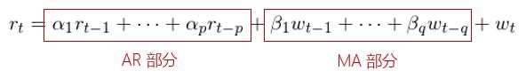
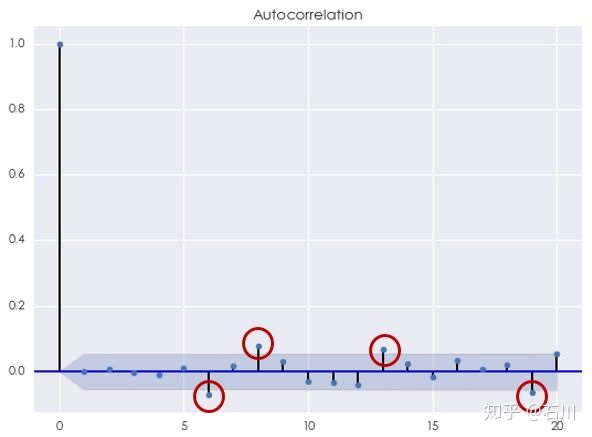
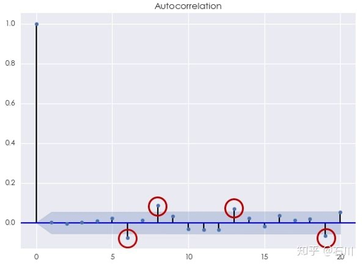
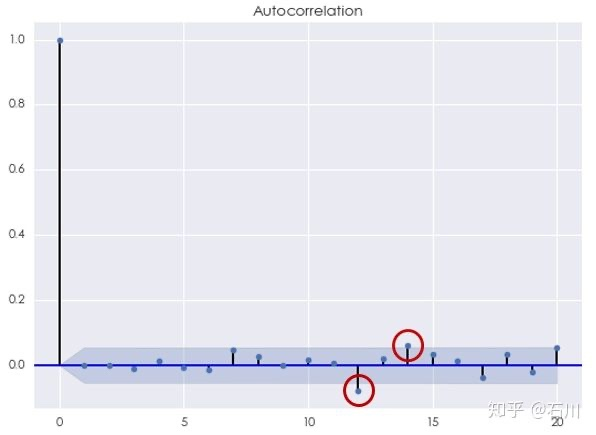

进阶篇¶
1 书接前文¶
本系列的前两篇——基础篇和初级篇——分别介绍了金融时间序列分析的核心以及时间序列建模中最简单的模型：白噪声和随机游走。在金融时间序列研究的对象中，投资品的收益率无疑是最重要的一个。挖掘收益率序列的自相关性是金融时间序列的核心内容。无论对于个股还是指数，它们的收益率序列都表现着一定的自相关性。前面的文章说明，白噪声模型假设了时间序列各观测点之间的独立性、无法捕捉收益率序列的自相关性，因此使用白噪声来对投资品收益率建模是不妥的。
如果投资品收益率真的是个白噪声，那么我们就靠扔硬币猜涨跌就行了。
本文为系列的第三篇——进阶篇。**我们将介绍时间序列分析中最常用的线性模型：自回归模型、滑动平均模型，以及它们二者结合的自回归滑动平均模型。**在下文中我们将看到，自回归和滑动平均模型这两个模型都从某种程度上符合交易者对收益率变化的理解，因此它们都能刻画出收益率序列中的某种自相关性。
首先来看自回归模型。
2 自回归模型¶
对于 A 股的收益率，人们往往有这样的感受：
- 在大牛市的时候，股票天天涨（每个交易日的收益率都是正的、鲜有回调），万民欢腾；
- 在大熊市的时候，股票日日跌（每个交易日的收益率都是负的、拒绝反弹），戾气冲天；
- 在震荡市的时候，股票时涨时跌，一买就跌，一卖就涨，颇有价格在某个区间内震荡、收益率呈现均值回复之意。
这些感受给我们的启发是，收益率序列的前后观测点之间往往不是独立的，而是以某种自相关性联系在一起。因此，一个很自然的问题就是：能不能用过去的收益率序列对未来的收益率建模？答案是肯定的。这便引出了自回归模型（autoregressive model）。
数学上，满足如下关系的时间序列 \(\{r_t\}\) 被称为一个 \(p\) 阶的自回归模型，记为 \(AR(p)\) 模型：
这是一个典型的线性回归模型。它和传统线性回归的不同之处在于自变量是序列自身（历史观测值），而非其他变量，这就是自回归中“自”的由来。
另外， \(p\) 阶的意思是模型使用当前时刻 \(t\) 之前的 \(p\) 个观测值作为自变量对 \(t\) 建模。这个模型的含义是， $ r_t $ 可以表达为 \(t\) 时刻之前的 \(p\) 个收益率观测值的线性组合以及一个 \(t\) 时刻的随机误差 \(w_t\) 。
\(p\) 的取值可以是任何一个正整数，因此最简单的自回归模型就是 \(AR(1)\) 模型（\(p=1\)）。
在上面这个定义中，我们没有考虑截距项。如果截距项对于待研究的时间序列是必要的，则可以在上面的公式右侧加入一个常数项\(c\) 。
另外需要特别说明的是，自回归模型不一定都满足平稳性。 举一个最简单的例子，本系列初级篇介绍的随机游走模型其实就是一个一阶自回归模型，满足： \(x_t = x_{t-1} + w_t\) 。由于 \(x_t\) 的方差是时间 \(t\) 的函数，因此该序列不满足平稳性。
对于一个 \(p\) 阶自回归模型，由它的回归系数 \(\alpha_i\) 可以写出它的**特征方程（characteristic equation）**：
它是一个 \(p\) 次多项式，有 \(p\) 个解，其中可能既包括实数解又包括复数解；这 \(p\) 个解的倒数称为该方程的 特征根（characteristic roots）。 自回归模型平稳性要求模型特征方程的所有特征根的模都小于 1。 在上面的随机游走例子中，该模型的特征方程为 \(1-x=0\) ，它的特征根为 1。由于它不满足模小于 1 这个条件，因此该模型不满足平稳性。
对于一个满足平稳性、且假设没有截距项的 \(p\) 阶自回归模型，它的均值显然为 0（如果有截距项的话，该时间序列的均值就是 \(c\) ；它的不同间隔 \(k\) 的自协方差 \(\gamma_k\) 和自相关系数 \(\rho_k\) 可以表达为如下的递归方程，又称为 Yule-Walker equations：
在实际中，想要使用自回归模型对收益率建模，必须确定模型的阶数 \(p\) 。这一点将在本文的第 5 节讨论。
3 滑动平均模型¶
滑动平均（moving average）模型是另一个常见的线性时间序列模型。 在自回归模型中，我们将收益率 \(r_t\) 看作是给定阶数 \(p\) 下历史收益率序列的线性组合。 与自回归模型不同，滑动平均模型将收益率 \(r_t\) 看作是历史白噪声的线性组合。
这听起来也许有些费解。但它背后的逻辑也符合人们的认知。以美股指数（比如标准普尔 500 指数）为例，它给我们的印象是它的收益率有一个微弱的但是大于零的漂移率（drift），形成一个常年慢牛的走势。除了这个 drift 项之外，它的收益率呈不规则的波动。在这种背景下，自回归模型仿佛不是那么好用。而滑动平均模型则是对漂移率之外“随机噪声”建模，它把这些噪声理解为不同时刻出现的影响收益率的新息或者冲击（shocks）。通过对“噪声”建模来预测当前时刻 \(t\) 的“噪声”，再和漂移率结合，作为 \(t\) ** 时刻的收益率预测。
数学上，满足如下关系的时间序列\(\{r_t\}\) 被称为一个 \(q\) 阶的滑动平均模型（为了简化表达式，我们假设漂移率项为 0，即该模型不考虑截距项），记为 \(MA(q)\) 模型：
与自回归模型不同，滑动平均模型一定满足平稳性。 它的序列均值为 0（如果考虑截距项，则可以在上式右侧加入一个常数 \(c\) 代表漂移率，这时序列均值变为 \(c\)。它的各间隔 \(k\) 的自相关系数满足：
$$ \rho_k = \begin{cases} & 1 & \text{if } k = 0 \ \sum_{i=0}{q-k}{\beta_i\beta_{i+k}}/\sum_{i=0}q{\beta_i^2} & & \text{if } k=1,\cdots,q \ & 0 & \text{if } k > q \ \end{cases} $$ 其中$\beta_0 = 1 $ 。同样，我们将在第 5 节中介绍如何选择滑动平均模型的阶数 \(q\) 。
4 自回归滑动平均模型¶
前面两节分别讨论了自回归和滑动平均模型。前者用收益率的历史对未来收益率做预测，它背后的逻辑是捕捉市场参与者的有效性（或者非有效性）造成的市场的动量或者反转效应；而后者对噪声建模，其逻辑为突发信息对收益率将会造成冲击（比如上市公司超出预期的财报或者内部交易丑闻等）。
将一个 \(p\) 阶的自回归模型和一个 \(q\) 阶的滑动平均模型组合在一起，便得到了一个阶数为 \((p,q)\) 的自回归滑动平均模型（autoregressive moving average model），它将 AR 和 MA 模型的优势互补起来。 由于 AR 和 MA 模型都是线性模型，因此它俩的线性组合，即 ARMA 模型，也是线性模型。
数学上，满足如下关系的时间序列\(\{r_t\}\) 被称为一个阶数为 \((p,q)\) 的自回归滑动平均模型（为了简化表达式，假设模型中的不含常数项），记 \(\text{ARMA}(p,q)\) 模型：

相比较单一的 AR 或者 MA 模型，ARMA 模型拥有更多的参数。因此它出现过拟合的危险就更高。 虽然它能够捕捉到两个单一模型各自所代表的时间序列自回归性，但是在确定阶数 \(p\) 和 \(q\) 的时候，我们应时刻谨记，防止过拟合。
下面就来看看如何利用**信息量准则（information criterion）和残差自相关检验可以被用来确定 AR、MA 以及 ARMA 模型的阶数。**
5 确定模型的阶数¶
在实际中使用 AR、MA 或 ARMA 模型对收益率建模，必须确定模型的阶数 \(p\) 以及 \(q\) 。显然，\(p\) 或者 \(q\) 越大，则模型的参数越多，越有可能捕捉到时间序列中不同间隔 \(k\) 的自相关性。但是，参数太多的话容易造成过拟合。因此在选择阶数时，必须同时考虑拟合的准确性和防止过拟合。
在确定模型阶数时，常用的工具是使用信息量准则，包括赤池信息量准则（Akaike information criterion，简称 AIC，由日本统计学家赤池弘次创立）以及贝叶斯信息量准则（Bayesian information criterion，简称 BIC）。
这两个信息量准则的目的都是寻找可以最好地解释数据但包含最少自由参数的模型。它们均使用模型的似然函数、参数个数以及观测点个数来构建一个标量函数，以此作为评价模型好坏的标准。它们的区别是标量函数的表达式有所不同。
令 \(L\) 、 \(k\) 、\(n\) 表示模型的似然函数，则 AIC 和 BIC 的定义分别为：
从定义可知，AIC 和 BIC 都由两部分组成：第一部分衡量模型的拟合度，第二部分是对参数个数的惩罚（防止过拟合）。当一个模型能够很好的解释（样本内）数据时，它的似然函数很大，因此第一项 $-2\ln(L) ** 就会越小；如果模型的参数越少，则第二项也越少。所以 AIC 和 BIC 总是越小越好。
随着模型阶数 \(p\) 和 \(q\) 的增多，模型对样本内的数据的解释程度越来越高，即 \(-2\ln(L)\) 变小。但是解释度的提高是以参数增多（过拟合风险增大）为代价，因此 \(2k\) 或者 \(k\ln(n)\) 增大。所以 AIC 和 BIC 是在这两者之间做权衡。最终选出的最佳参数 \(p^\star\) 和 \(q^\star\) 可以使它们对应的 AIC 或者 BIC 比其他任何参数 \(p\) 和 \(q\) 对应的 AIC 或者 BIC 更小。
值得说明的是，AIC 和 BIC 的表达式虽然长得差不多，但是还是有细微的差别。因此在实际中，有可能 AIC 对应的最优阶数（即使得 AIC 最小）和 BIC 对应的最优阶数（即使得 BIC 最小）略有差别。具体选择哪个信息量准则则取决于使用者自身。
当我们使用 AIC 或者 BIC 确定模型的最优阶数之后，便可以对时间序列建模。但是，我们仍然需要检验该模型是否很好的捕捉了时间序列的自相关性。在本系列反复强调过，如果一个模型和原时间序列的残差满足白噪声，那么该模型就是合适的。因此，我们只需要检验残差序列是否在任何间隔 k 上呈现出统计意义上显著的自相关性。在这方面，Ljung–Box 检验是一个很好的方法，它同时检验残差序列各间隔的自相关系数是否显著的不为 0。
Ljung–Box 检验构建了一个满足卡方分布（chi-squared distribution）的统计量，然后计算它出现的概率，以此来判断是否可以在给定的显著性水平下拒绝原假设。这里不再赘述，感兴趣的读者可参阅相关资料。
6 利用 AR、MA 以及 ARMA 对上证指数收益率建模¶
本节中，我们利用上面介绍的 AR、MA 以及 ARMA 对上证指数的对数收益率建模。实验考虑 2012 年 4 月 24 日到 2017 年 4 月 24 日这五年之中上证指数的日收益率。在确定模型阶数时，在给定的 \(p\) 、 \(q\) 参数区间内使用不同的参数取值建模，并采用 AIC 准则进行参数选择，在建模时让保留常数项。 \(p\) 和 \(q\) 的区间分别为：
- AR 模型： \(p\) 的取值范围为 1 到 5；
- MA 模型： \(q\) 的取值范围为 1 到 5；
- ARMA 模型：\(p\) 和 \(q\) 的取值范围为 1 到 5。
首先来看 AR 模型。根据 AIC 准则，最优的阶数 \(p^\star = 4\) ，此时 AIC = -7305.31。使用 Ljung-Box 检验原始对数收益率序列和 AR(4) 模型的残差是否在 20 以内的间隔上有任何自相关性，统计量的 p-value 为 0.005132，说明我们可以在 1% 的显著性水平下拒绝原假设。这意味着残差中存在相关性。事实上，这可以从残差序列的相关图中看到，它说明 残差序列在间隔 \(k\) 等于 6、8、13 和 19 时仍然有 AR(4) 模型未捕捉到的自相关性。

再来看看 MA 模型。根据 AIC 准则，最优的阶数同样为 $q^\star = 4 $ ，此时 AIC = -7302.70。使用 Ljung-Box 检验原始对数收益率序列和 MA(4) 模型的残差是否在 20 以内的间隔上有任何自相关性，统计量的 p-value 为 0.001371。同样，我们可以在 1% 的显著性水平下拒绝原假设。从下面的残差相关图不难发现，与 AR(4) 模型类似，MA(4) 模型的残差序列在间隔 \(k\) 等于 6、8、13 和 19 时仍然有模型未捕捉到的自相关性。

最后来看看 ARMA 模型。根据 AIC 准则，最优的阶数为 \(p^\star = 5\) ， $q^\star = 4 $ ，此时 AIC = -7330.43。使用 Ljung-Box 检验原始对数收益率序列和 ARMA(5,4) 模型的残差是否在 20 以内的间隔上有任何自相关性，统计量的 p-value 为 0.103462。这说明我们不能在 10% 的显著性水平下拒绝原假设。 它意味着间隔 20 以内，该模型的残差序列没有统计上显著的自相关。从残差序列的相关图中看到，虽然当 \(k\) 等于 12 和 14 时自相关系数超过了 95% 置信区间，但我们无法从统计上否定它们可能是来自随机误差。

从残差的自相关性分析来看，ARMA 模型比 AR 和 MA 模型单独使用更有效的捕捉了收益率序列中的自相关性。
7 最终章预告¶
众所周知，投资品的收益率序列具有一个属性称为波动聚类（volatility clustering）。这意味着收益率的波动率是随时间变化的（它是对收益率序列的二阶平稳性假设的直接挑战），这种波动率行为的术语称为条件异方差（conditional heteroskedasticity）。 本文介绍的 AR，MA 和 ARMA 模型均是不条件异方差模型；它们不考虑波动聚类（事实上，上一节中采用这些模型对过去 5 年上证指数对数收益率建模时，我们看到这些模型无法解释较大时的自相关性，这说明收益率存在长记忆性，这就和波动聚类有关）。为了定量的描述这种特性，我们需要更加复杂的模型。
针对波动率的特性，我们实际上是对收益率的平方直接建模。这时，可以使用自回归条件异方差（Autoregressive Conditional Heteroskedastic，又称 ARCH）模型和广义自回归条件异方差（Generalized Autoregressive Conditional Heteroskedastic，又称 GARCH）模型。(G)ARCH 模型是定量金融中应用广泛，主要用于预测风险。
(G)ARCH 模型主要解决收益率的波动率不恒定的问题。我们在此指出它是为了让读者意识到这一点。但是作为本系列所追求的目标，我们将不会更进一步的深入探讨 (G)ARCH 模型。当然，波动聚类仍然是一个必须要面对的问题，因此在实证中，我们将使用滚动窗口，通过对在每个窗口中的一段收益率序列建模来规避掉波动聚类这个问题，即假设在每一小段窗口内的收益率序列是平稳的。
下一篇文章将是本系列的最终章，它将介绍如何应用 ARMA 模型对上证指数收益率进行预测，并以此产生交易信号、构建交易策略。对于收益率的预测，时间序列分析到底是纸上谈兵还是实战利器？我们将在下篇见分晓。
（全文完）
免责声明： 文章内容不可视为投资意见。市场有风险，入市需谨慎。